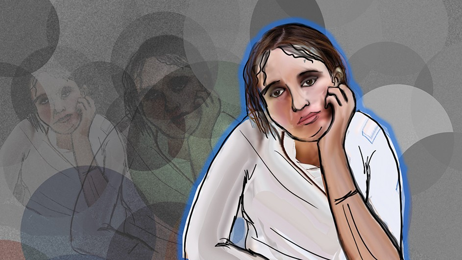
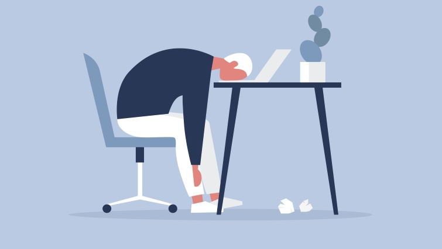

¿Qué es?
El aburrimiento es una sensación de falta de interés o entusiasmo en una actividad o situación. Ocurre cuando una persona se siente desinteresada, desmotivada o incapaz de encontrar satisfacción en lo que está haciendo en ese momento. El aburrimiento puede surgir en diversas situaciones, como cuando alguien está realizando una tarea monótona, esperando en una fila, escuchando una conversación poco interesante o simplemente no tiene nada que hacer.
¿Qué hago si me siento aburridx?
Explora nuevos intereses: El aburrimiento puede ser una señal de que es hora de probar algo nuevo. Investiga actividades, pasatiempos o proyectos que te intriguen. Aprender algo nuevo puede ser estimulante y gratificante.
Lee un libro o mira una película: La lectura y el cine son excelentes formas de escapar de la rutina y sumergirse en diferentes mundos. Elije un libro que te interese o una película que hayas querido ver y disfruta del viaje que ofrecen.
Conecta con otras personas: A veces, el aburrimiento surge cuando estamos solos. Llama a un amigo, familiar o colega para charlar o quedar para hacer algo juntos. La interacción social puede ser una excelente manera de romper la rutina y disfrutar de la compañía de otros.
Haz ejercicio: La actividad física es una excelente manera de combatir el aburrimiento y mejorar tu bienestar. Sal a caminar, corre, monta en bicicleta o realiza ejercicios en casa. El ejercicio libera endorfinas, lo que puede mejorar tu estado de ánimo.
Establece metas y haz listas: Haz una lista de cosas por hacer o establece metas personales. Esto te dará un sentido de propósito y dirección. Puedes abordar tareas pendientes, planificar proyectos futuros o simplemente organizarte mejor.

